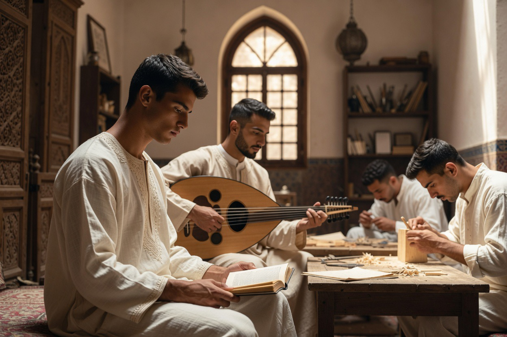
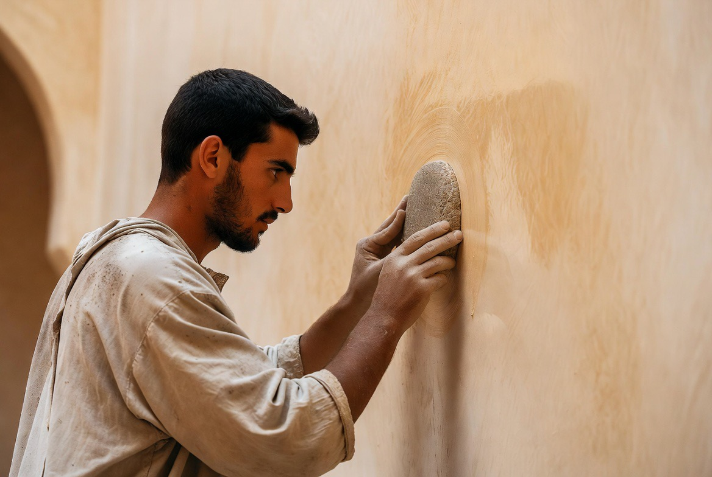
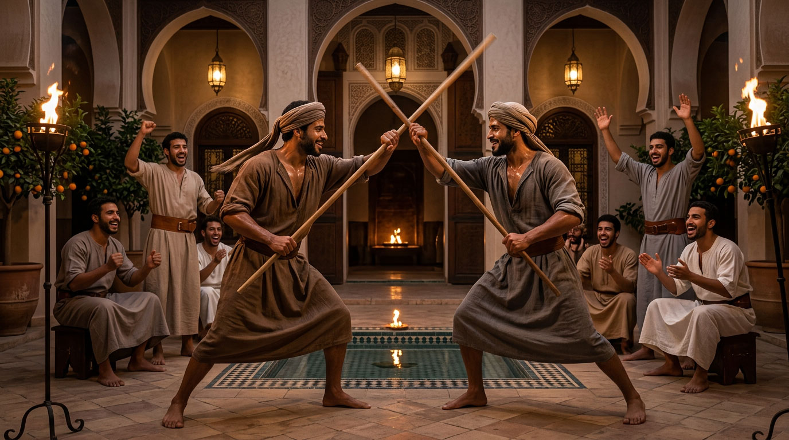
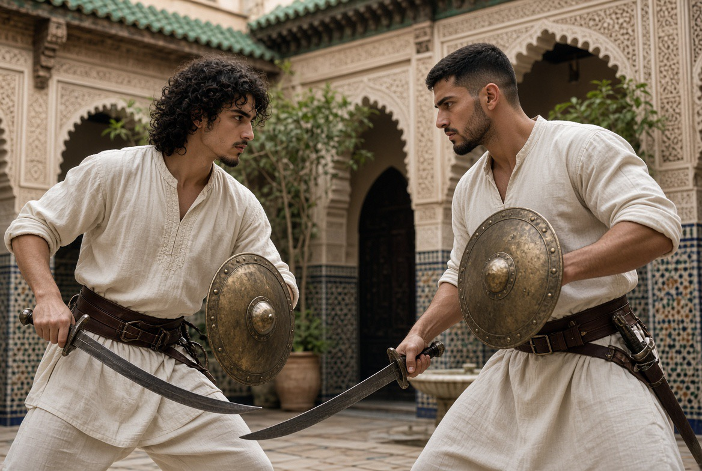

Dar al-Hiraf
The house of crafts. Formation of young people through gesture, study and discipline of the body.

Dar al-Hiraf is not a tourist workshop. It is a residential school: young people live, work, pray and form themselves together. The disciplines — calligraphy, music, zellige, plaster, weaving, perfumes, wood, archery — are inscribed in the same rhythm as prayer, study, the body, the table and the evening conversation.
Futuwwa — the ideal of companionship

In the medieval Islamic world, crafts were not transmitted only as technique: they were inscribed in the futuwwa (الفتوة), an ideal of companionship that bound the gesture to honour, the hand to the given word, the apprentice to the master.
Dar al-Hiraf takes up this logic: residency, discipline of the body, apprenticeship and prayer are not separated. The man capable of holding a craft is also the one who can hold a household.
Futuwwa is not a memory. It is the horizon of the whole house — the meaning of the name, the historical roots, the virtues, the signs, the link to the craft and its relevance today.
The crafts of the hand
اليدُ إذا عملتْ أحسنتْ، والعلمُ إذا جُرِّبَ ثبتَ
« The hand, when it works, embellishes; knowledge, when it is tested, is strengthened. »

Five disciplines — calligraphy, zellige, plaster & mocárabe, weaving & brocade, wood & intaglio — make up the artisanal heart of the house, each transmitted gesture after gesture by a maalem.

BODY, WORD, SOUND
Music & chant
Andalusian al-âla, tahtib, malhun, gnawa — four disciplines of sound, gesture and word.
Discover the four disciplines →
FURŪSIYYA
The formed body
Strength, endurance, wrestling, archery, fencing — the body is not an accessory of the craft: it is an instrument of presence and discipline. These four disciplines are inscribed in furūsiyya, the Arabo-Islamic chivalric tradition that united body, bow, wrestling and sword under a single system of formation.
Discover the four disciplines →
CRAFT OF SCENT
Perfumes & essences
The Moroccan art of scents becomes a discipline of formation. The nose, the hand, the memory — from the rose of Kelaât M’Gouna to the still, a craft learned like the others, gesture after gesture.
Discover the discipline →
The residency
One does not come to Dar al-Hiraf for a course. One lives there — a craft, a prayer, a table and a word held together, day after day.

AL-ATHAR
The work left behind
No one leaves this house without having left a work of his own hand, built into its walls and received by his master. It is the end of the training, not an ornament added to it: a companion is not the man who knows how to make something, but the man whose work has been accepted.
To every work set in place corresponds a line in the register of the house — and an undertaking: to teach in turn what one has received.

The family, cell of society
Formation is not separated from preparation for the home. The man capable of holding a craft must also be capable of holding a household, of honouring a woman, of raising children. The madrasa al-ūlā — the first school — remains the family.
Dar al-Hiraf forms men for generational continuity, not for a life isolated from the world of homes.